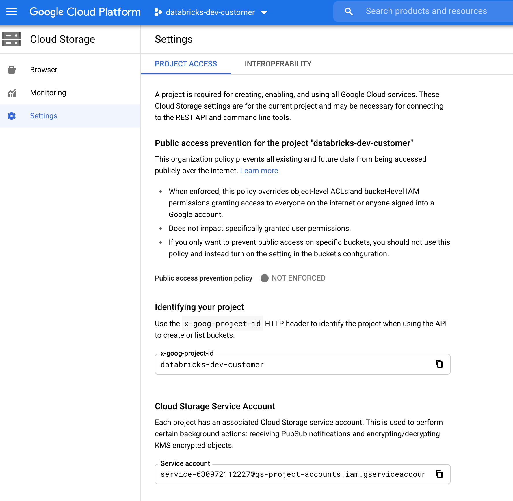
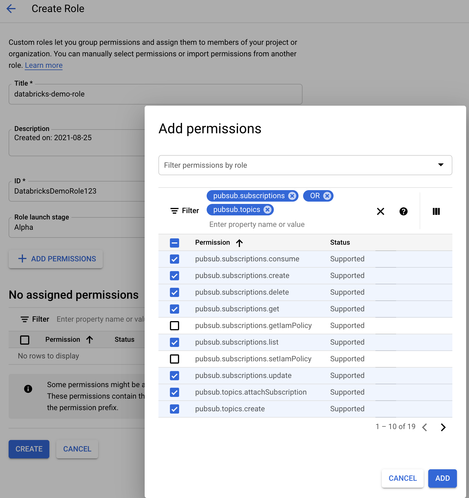

What is Auto Loader file notification mode?
In file notification mode, Auto Loader automatically sets up a notification service and queue service that subscribes to file events from the input directory. You can use file notifications to scale Auto Loader to ingest millions of files an hour. When compared to directory listing mode, file notification mode is more performant and scalable for large input directories or a high volume of files but requires additional cloud permissions.
You can switch between file notifications and directory listing at any time and still maintain exactly-once data processing guarantees.
Warning
Changing the source path for Auto Loader is not supported for file notification mode. If file notification mode is used and the path is changed, you might fail to ingest files that are already present in the new directory at the time of the directory update.
Cloud resources used in Auto Loader file notification mode
Important
You need elevated permissions to automatically configure cloud infrastructure for file notification mode. Contact your cloud administrator or workspace admin. See:
Auto Loader can set up file notifications for you automatically when you set the option cloudFiles.useNotifications to true and provide the necessary permissions to create cloud resources. In addition, you might need to provide additional options to grant Auto Loader authorization to create these resources.
The following table summarizes which resources are created by Auto Loader.
Cloud Storage |
Subscription Service |
Queue Service |
Prefix * |
Limit ** |
|---|---|---|---|---|
AWS S3 |
AWS SNS |
AWS SQS |
databricks-auto-ingest |
100 per S3 bucket |
ADLS Gen2 |
Azure Event Grid |
Azure Queue Storage |
databricks |
500 per storage account |
GCS |
Google Pub/Sub |
Google Pub/Sub |
databricks-auto-ingest |
100 per GCS bucket |
Azure Blob Storage |
Azure Event Grid |
Azure Queue Storage |
databricks |
500 per storage account |
* Auto Loader names the resources with this prefix.
** How many concurrent file notification pipelines can be launched
If you require running more than the limited number of file notification pipelines for a given storage account, you can:
Leverage a service such as AWS Lambda, Azure Functions, or Google Cloud Functions to fan out notifications from a single queue that listens to an entire container or bucket into directory specific queues.
File notification events
AWS S3 provides an ObjectCreated event when a file is uploaded to an S3 bucket regardless of whether it was uploaded by a put or multi-part upload.
ADLS Gen2 provides different event notifications for files appearing in your Gen2 container.
Auto Loader listens for the
FlushWithCloseevent for processing a file.Auto Loader streams support the
RenameFileaction for discovering files.RenameFileactions require an API request to the storage system to get the size of the renamed file.Auto Loader streams created with Databricks Runtime 9.0 and after support the
RenameDirectoryaction for discovering files.RenameDirectoryactions require API requests to the storage system to list the contents of the renamed directory.
Google Cloud Storage provides an OBJECT_FINALIZE event when a file is uploaded, which includes overwrites and file copies. Failed uploads do not generate this event.
Note
Cloud providers do not guarantee 100% delivery of all file events under very rare conditions and do not provide strict SLAs on the latency of the file events. Databricks recommends that you trigger regular backfills with Auto Loader by using the cloudFiles.backfillInterval option to guarantee that all files are discovered within a given SLA if data completeness is a requirement. Triggering regular backfills does not cause duplicates.
Required permissions for configuring file notification for ADLS Gen2 and Azure Blob Storage
You must have read permissions for the input directory. See Azure Blob Storage.
To use file notification mode, you must provide authentication credentials for setting up and accessing the event notification services. In Databricks Runtime 8.1 and above, you only need a service principal for authentication. For Databricks Runtime 8.0 and below, you must provide both a service principal and a connection string.
Service principal - using Azure built-in roles
Create a Microsoft Entra ID app and service principal in the form of client ID and client secret.
Assign this app the following roles to the storage account in which the input path resides:
Contributor: This role is for setting up resources in your storage account, such as queues and event subscriptions.
Storage Queue Data Contributor: This role is for performing queue operations such as retrieving and deleting messages from the queues. This role is required in Databricks Runtime 8.1 and above only when you provide a service principal without a connection string.
Assign this app the following role to the related resource group:
EventGrid EventSubscription Contributor: This role is for performing event grid subscription operations such as creating or listing event subscriptions.
For more information, see Assign Azure roles using the Azure portal.
Service principal - using custom role
If you are concerned with the excessive permissions required for the preceding roles, you can create a Custom Role with at least the following permissions, listed below in Azure role JSON format:
"permissions": [ { "actions": [ "Microsoft.EventGrid/eventSubscriptions/write", "Microsoft.EventGrid/eventSubscriptions/read", "Microsoft.EventGrid/eventSubscriptions/delete", "Microsoft.EventGrid/locations/eventSubscriptions/read", "Microsoft.Storage/storageAccounts/read", "Microsoft.Storage/storageAccounts/write", "Microsoft.Storage/storageAccounts/queueServices/read", "Microsoft.Storage/storageAccounts/queueServices/write", "Microsoft.Storage/storageAccounts/queueServices/queues/write", "Microsoft.Storage/storageAccounts/queueServices/queues/read", "Microsoft.Storage/storageAccounts/queueServices/queues/delete" ], "notActions": [], "dataActions": [ "Microsoft.Storage/storageAccounts/queueServices/queues/messages/delete", "Microsoft.Storage/storageAccounts/queueServices/queues/messages/read", "Microsoft.Storage/storageAccounts/queueServices/queues/messages/write", "Microsoft.Storage/storageAccounts/queueServices/queues/messages/process/action" ], "notDataActions": [] } ]
Then, you can assign this custom role to your app.
For more information, see Assign Azure roles using the Azure portal.
Connection string
Auto Loader requires a connection stringto authenticate for Azure Queue Storage operations, such as creating a queue and reading and deleting messages from the queue. The queue is created in the same storage account where the input directory path is located. You can find your connection string in your account key or shared access signature (SAS).
If you are using Databricks Runtime 8.1 or above, you do not need a connection string.
If you are using Databricks Runtime 8.0 or below, you must provide a connection string to authenticate for Azure Queue Storage operations, such as creating a queue and retrieving and deleting messages from the queue. The queue is created in the same storage account in which the input path resides. You can find your connection string in your account key or shared access signature (SAS). When configuring an SAS token, you must provide the following permissions:
Troubleshooting common errors
Error:
java.lang.RuntimeException: Failed to create event grid subscription.
If you see this error message when you run Auto Loader for the first time, the Event Grid is not registered as a Resource Provider in your Azure subscription. To register this on Azure portal:
Go to your subscription.
Click Resource Providers under the Settings section.
Register the provider
Microsoft.EventGrid.
Error:
403 Forbidden ... does not have authorization to perform action 'Microsoft.EventGrid/eventSubscriptions/[read|write]' over scope ...
If you see this error message when you run Auto Loader for the first time, ensure you have given the Contributor role to your service principal for Event Grid as well as your storage account.
Required permissions for configuring file notification for AWS S3
You must have read permissions for the input directory. See S3 connection details for more details.
To use file notification mode, attach the following JSON policy document to your IAM user or role.
{
"Version": "2012-10-17",
"Statement": [
{
"Sid": "DatabricksAutoLoaderSetup",
"Effect": "Allow",
"Action": [
"s3:GetBucketNotification",
"s3:PutBucketNotification",
"sns:ListSubscriptionsByTopic",
"sns:GetTopicAttributes",
"sns:SetTopicAttributes",
"sns:CreateTopic",
"sns:TagResource",
"sns:Publish",
"sns:Subscribe",
"sqs:CreateQueue",
"sqs:DeleteMessage",
"sqs:ReceiveMessage",
"sqs:SendMessage",
"sqs:GetQueueUrl",
"sqs:GetQueueAttributes",
"sqs:SetQueueAttributes",
"sqs:TagQueue",
"sqs:ChangeMessageVisibility"
],
"Resource": [
"arn:aws:s3:::<bucket-name>",
"arn:aws:sqs:<region>:<account-number>:databricks-auto-ingest-*",
"arn:aws:sns:<region>:<account-number>:databricks-auto-ingest-*"
]
},
{
"Sid": "DatabricksAutoLoaderList",
"Effect": "Allow",
"Action": [
"sqs:ListQueues",
"sqs:ListQueueTags",
"sns:ListTopics"
],
"Resource": "*"
},
{
"Sid": "DatabricksAutoLoaderTeardown",
"Effect": "Allow",
"Action": [
"sns:Unsubscribe",
"sns:DeleteTopic",
"sqs:DeleteQueue"
],
"Resource": [
"arn:aws:sqs:<region>:<account-number>:databricks-auto-ingest-*",
"arn:aws:sns:<region>:<account-number>:databricks-auto-ingest-*"
]
}
]
}
where:
<bucket-name>: The S3 bucket name where your stream will read files, for example,auto-logs. You can use*as a wildcard, for example,databricks-*-logs. To find out the underlying S3 bucket for your DBFS path, you can list all the DBFS mount points in a notebook by running%fs mounts.<region>: The AWS region where the S3 bucket resides, for example,us-west-2. If you don’t want to specify the region, use*.<account-number>: The AWS account number that owns the S3 bucket, for example,123456789012. If don’t want to specify the account number, use*.
The string databricks-auto-ingest-* in the SQS and SNS ARN specification is the name prefix that the cloudFiles source uses when creating SQS and SNS services. Since Databricks sets up the notification services in the initial run of the stream, you can use a policy with reduced permissions after the initial run (for example, stop the stream and then restart it).
Note
The preceding policy is concerned only with the permissions needed for setting up file notification services, namely S3 bucket notification, SNS, and SQS services and assumes you already have read access to the S3 bucket. If you need to add S3 read-only permissions, add the following to the Action list in the DatabricksAutoLoaderSetup statement in the JSON document:
s3:ListBuckets3:GetObject
Reduced permissions after initial setup
The resource setup permissions described above are required only during the initial run of the stream. After the first run, you can switch to the following IAM policy with reduced permissions.
Important
With the reduced permissions, you can’t start new streaming queries or recreate resources in case of failures (for example, the SQS queue has been accidentally deleted); you also can’t use the cloud resource management API to list or tear down resources.
{
"Version": "2012-10-17",
"Statement": [
{
"Sid": "DatabricksAutoLoaderUse",
"Effect": "Allow",
"Action": [
"s3:GetBucketNotification",
"sns:ListSubscriptionsByTopic",
"sns:GetTopicAttributes",
"sns:TagResource",
"sns:Publish",
"sqs:DeleteMessage",
"sqs:ReceiveMessage",
"sqs:SendMessage",
"sqs:GetQueueUrl",
"sqs:GetQueueAttributes",
"sqs:TagQueue",
"sqs:ChangeMessageVisibility"
],
"Resource": [
"arn:aws:sqs:<region>:<account-number>:<queue-name>",
"arn:aws:sns:<region>:<account-number>:<topic-name>",
"arn:aws:s3:::<bucket-name>"
]
},
{
"Effect": "Allow",
"Action": [
"s3:GetBucketLocation",
"s3:ListBucket"
],
"Resource": [
"arn:aws:s3:::<bucket-name>"
]
},
{
"Effect": "Allow",
"Action": [
"s3:PutObject",
"s3:PutObjectAcl",
"s3:GetObject",
"s3:DeleteObject"
],
"Resource": [
"arn:aws:s3:::<bucket-name>/*"
]
},
{
"Sid": "DatabricksAutoLoaderListTopics",
"Effect": "Allow",
"Action": [
"sqs:ListQueues",
"sqs:ListQueueTags",
"sns:ListTopics"
],
"Resource": "arn:aws:sns:<region>:<account-number>:*"
}
]
}
Securely ingest data in a different AWS account
Auto Loader can load data across AWS accounts by assuming an IAM role. After setting the temporary security credentials created by AssumeRole, you can have Auto Loader load cloud files cross-accounts. To set up the Auto Loader for cross-AWS accounts, follow the doc: Access cross-account S3 buckets with an AssumeRole policy. Make sure you:
Verify that you have the AssumeRole meta role assigned to the cluster.
Configure the cluster’s Spark configuration to include the following properties:
fs.s3a.credentialsType AssumeRole fs.s3a.stsAssumeRole.arn arn:aws:iam::<bucket-owner-acct-id>:role/MyRoleB fs.s3a.acl.default BucketOwnerFullControl
Required permissions for configuring file notification for GCS
You must have list and get permissions on your GCS bucket and on all the objects. For details, see the Google documentation on IAM permissions.
To use file notification mode, you need to add permissions for the GCS service account and the account used to access the Google Cloud Pub/Sub resources.
Add the Pub/Sub Publisher role to the GCS service account. This allows the account to publish event notification messages from your GCS buckets to Google Cloud Pub/Sub.
As for the service account used for the Google Cloud Pub/Sub resources, you need to add the following permissions:
pubsub.subscriptions.consume
pubsub.subscriptions.create
pubsub.subscriptions.delete
pubsub.subscriptions.get
pubsub.subscriptions.list
pubsub.subscriptions.update
pubsub.topics.attachSubscription
pubsub.topics.create
pubsub.topics.delete
pubsub.topics.get
pubsub.topics.list
pubsub.topics.update
To do this, you can either create an IAM custom role with these permissions or assign pre-existing GCP roles to cover these permissions.
Finding the GCS Service Account
In the Google Cloud Console for the corresponding project, navigate to Cloud Storage > Settings.
The section “Cloud Storage Service Account” contains the email of the GCS service account.

Creating a Custom Google Cloud IAM Role for File Notification Mode
In the Google Cloud console for the corresponding project, navigate to IAM & Admin > Roles. Then, either create a role at the top or update an existing role. In the screen for role creation or edit, click Add Permissions. A menu appears in which you can add the desired permissions to the role.

Manually configure or manage file notification resources
Privileged users can manually configure or manage file notification resources.
Set up the file notification services manually through the cloud provider and manually specify the queue identifier. See File notification options for more details.
Use Scala APIs to create or manage the notifications and queuing services, as shown in the following example:
Note
You must have appropriate permissions to configure or modify cloud infrastructure. See permissions documentation for Azure, S3, or GCS.
# Databricks notebook source
# MAGIC %md ## Python bindings for CloudFiles Resource Managers for all 3 clouds
# COMMAND ----------
#####################################
## Creating a ResourceManager in AWS
#####################################
manager = spark._jvm.com.databricks.sql.CloudFilesAWSResourceManager \
.newManager() \
.option("cloudFiles.region", <region>) \
.option("path", <path-to-specific-bucket-and-folder>) \
.create()
#######################################
## Creating a ResourceManager in Azure
#######################################
manager = spark._jvm.com.databricks.sql.CloudFilesAzureResourceManager \
.newManager() \
.option("cloudFiles.connectionString", <connection-string>) \
.option("cloudFiles.resourceGroup", <resource-group>) \
.option("cloudFiles.subscriptionId", <subscription-id>) \
.option("cloudFiles.tenantId", <tenant-id>) \
.option("cloudFiles.clientId", <service-principal-client-id>) \
.option("cloudFiles.clientSecret", <service-principal-client-secret>) \
.option("path", <path-to-specific-container-and-folder>) \
.create()
#######################################
## Creating a ResourceManager in GCP
#######################################
manager = spark._jvm.com.databricks.sql.CloudFilesGCPResourceManager \
.newManager() \
.option("path", <path-to-specific-bucket-and-folder>) \
.create()
# Set up a queue and a topic subscribed to the path provided in the manager.
manager.setUpNotificationServices(<resource-suffix>)
# List notification services created by <AL>
from pyspark.sql import DataFrame
df = DataFrame(manager.listNotificationServices())
# Tear down the notification services created for a specific stream ID.
# Stream ID is a GUID string that you can find in the list result above.
manager.tearDownNotificationServices(<stream-id>)
/////////////////////////////////////
// Creating a ResourceManager in AWS
/////////////////////////////////////
import com.databricks.sql.CloudFilesAWSResourceManager
val manager = CloudFilesAWSResourceManager
.newManager
.option("cloudFiles.region", <region>) // optional, will use the region of the EC2 instances by default
.option("path", <path-to-specific-bucket-and-folder>) // required only for setUpNotificationServices
.create()
///////////////////////////////////////
// Creating a ResourceManager in Azure
///////////////////////////////////////
import com.databricks.sql.CloudFilesAzureResourceManager
val manager = CloudFilesAzureResourceManager
.newManager
.option("cloudFiles.connectionString", <connection-string>)
.option("cloudFiles.resourceGroup", <resource-group>)
.option("cloudFiles.subscriptionId", <subscription-id>)
.option("cloudFiles.tenantId", <tenant-id>)
.option("cloudFiles.clientId", <service-principal-client-id>)
.option("cloudFiles.clientSecret", <service-principal-client-secret>)
.option("path", <path-to-specific-container-and-folder>) // required only for setUpNotificationServices
.create()
///////////////////////////////////////
// Creating a ResourceManager in GCP
///////////////////////////////////////
import com.databricks.sql.CloudFilesGCPResourceManager
val manager = CloudFilesGCPResourceManager
.newManager
.option("path", <path-to-specific-bucket-and-folder>) // Required only for setUpNotificationServices.
.create()
// Set up a queue and a topic subscribed to the path provided in the manager.
manager.setUpNotificationServices(<resource-suffix>)
// List notification services created by <AL>
val df = manager.listNotificationServices()
// Tear down the notification services created for a specific stream ID.
// Stream ID is a GUID string that you can find in the list result above.
manager.tearDownNotificationServices(<stream-id>)
Use setUpNotificationServices(<resource-suffix>) to create a queue and a subscription with the name <prefix>-<resource-suffix> (the prefix depends on the storage system summarized in Cloud resources used in Auto Loader file notification mode. If there is an existing resource with the same name, Databricks reuses the existing resource instead of creating a new one. This function returns a queue identifier that you can pass to the cloudFiles source using the identifier in File notification options. This enables the cloudFiles source user to have fewer permissions than the user who creates the resources.
Provide the "path" option to newManager only if calling setUpNotificationServices; it is not needed for listNotificationServices or tearDownNotificationServices. This is the same path that you use when running a streaming query.
The following matrix indicates which API methods are supported in which Databricks Runtime for each type of storage:
Cloud Storage |
Setup API |
List API |
Tear down API |
|---|---|---|---|
AWS S3 |
All versions |
All versions |
All versions |
ADLS Gen2 |
All versions |
All versions |
All versions |
GCS |
Databricks Runtime 9.1 and above |
Databricks Runtime 9.1 and above |
Databricks Runtime 9.1 and above |
Azure Blob Storage |
All versions |
All versions |
All versions |
ADLS Gen1 |
Unsupported |
Unsupported |
Unsupported |